Whering’s outfit planner
Whering documents how to schedule saved outfits and choose outfit suggestions in the Planner. I mapped the steps to find opportunities to make my own flow simpler. The relative speed still needs testing.
Research question
I’m exploring how to make morning outfit decisions easier while letting people stay in control of what they wear.
Whering documents how to schedule saved outfits and choose outfit suggestions in the Planner. I mapped the steps to find opportunities to make my own flow simpler. The relative speed still needs testing.
Product materials document a digital closet, garment recognition, outfit suggestions, and calendar planning. App reviews in my notes raise questions about setup and finding saved looks.
Visible choices reduce the effort of remembering items from scratch. Showing saved outfit thumbnails in the weekly calendar lets people recognize a look when they need it.
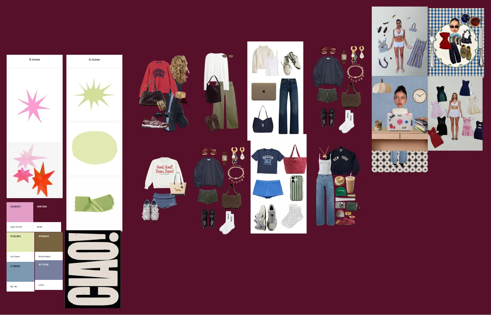
Burgundy anchors the palette. Orchid and pale green add color, and cutout pieces give the layout a fashion-editorial feel.
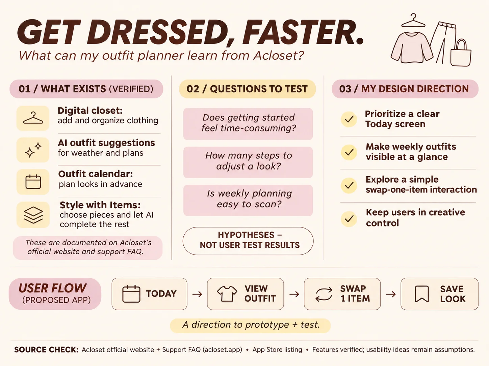
The concept brings together a Today view, a weekly calendar, and quick item swaps.
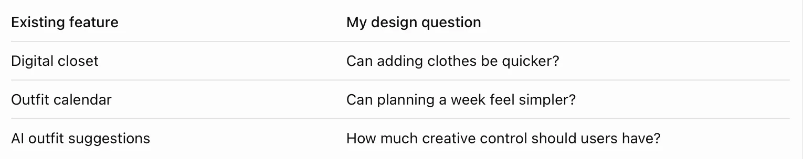
Three starting questions for evaluating existing tools.
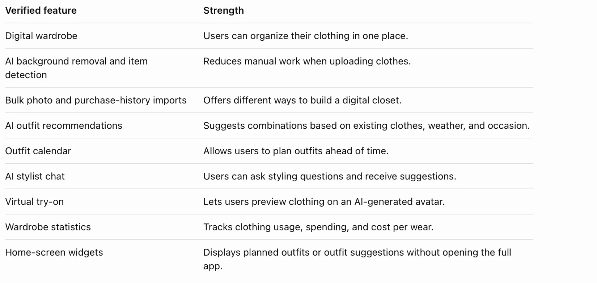
A documented feature baseline for the comparison.
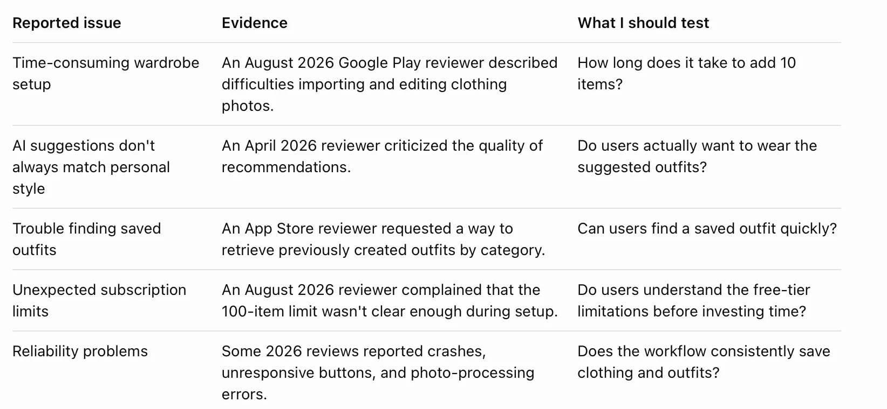
User-reported issues suggest tasks to observe in a prototype.
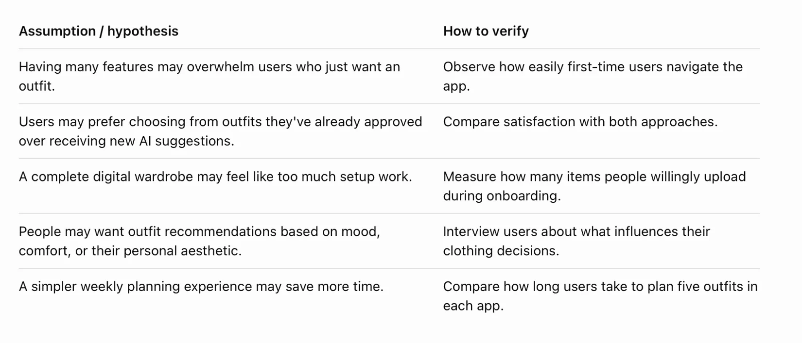
Evaluate onboarding, personal preferences, and time to plan five outfits.
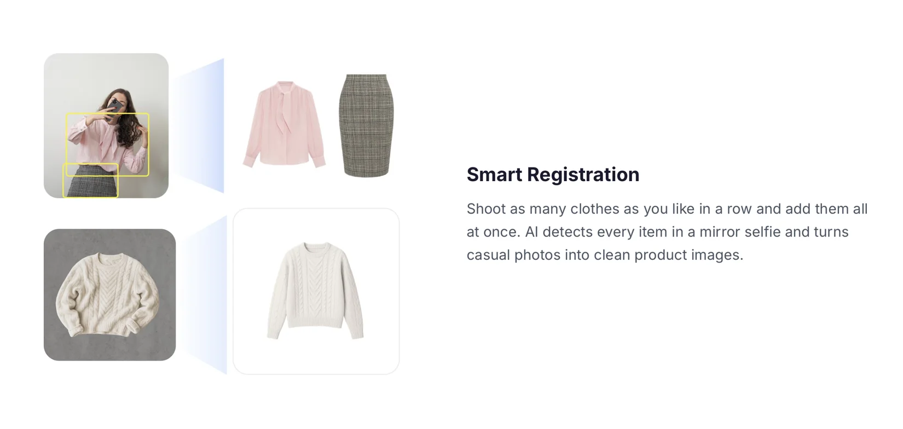
Cutouts keep individual pieces recognizable at small sizes.
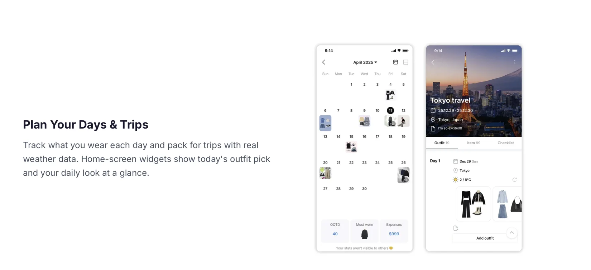
A reference for thumbnail density in the weekly view.
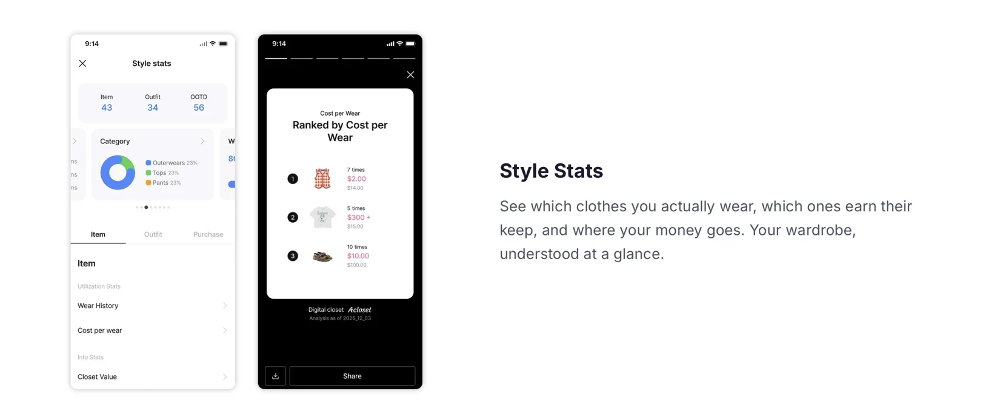
A reference for making future experiment results easy to scan.
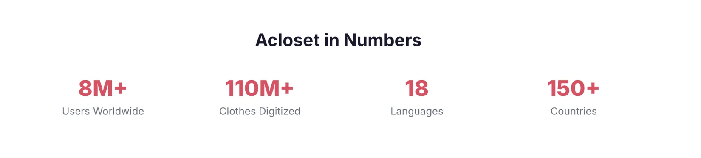
The oversized figures make the metrics quick to scan.
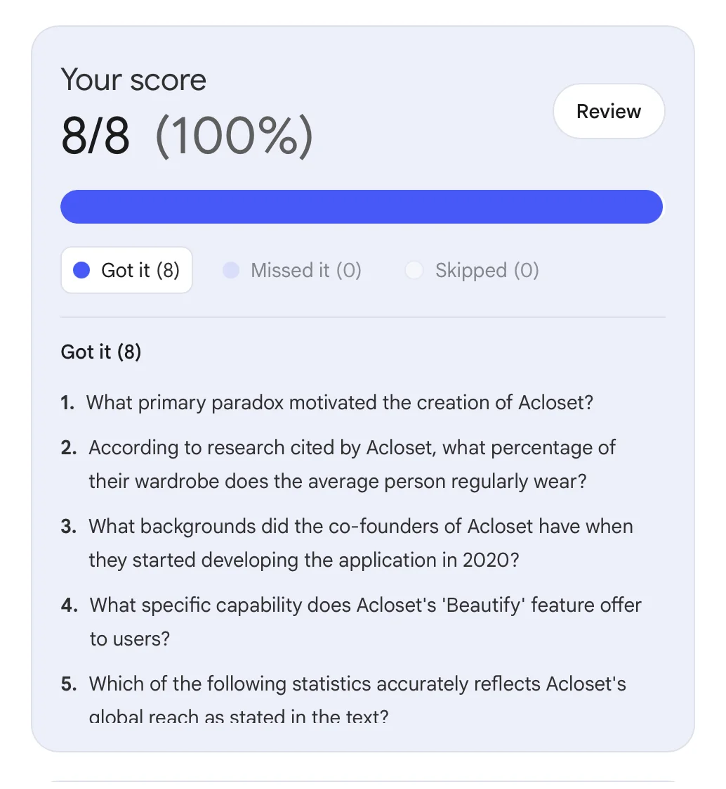
A record of reviewing source material.
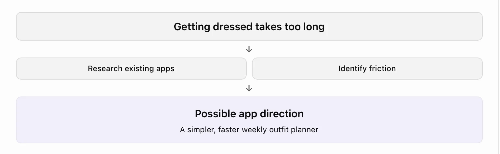
The map connects the daily problem to the prototype direction.
A reference for bold display type and confident accent colors.
Compared wardrobe setup, calendars, and AI suggestions. Turned review comments into test questions about wardrobe setup, finding saved outfits, and personal style.
Captured garment registration, calendar planning, and wardrobe statistics. The weekly calendar screenshots gave me a reference for showing outfits at a glance.